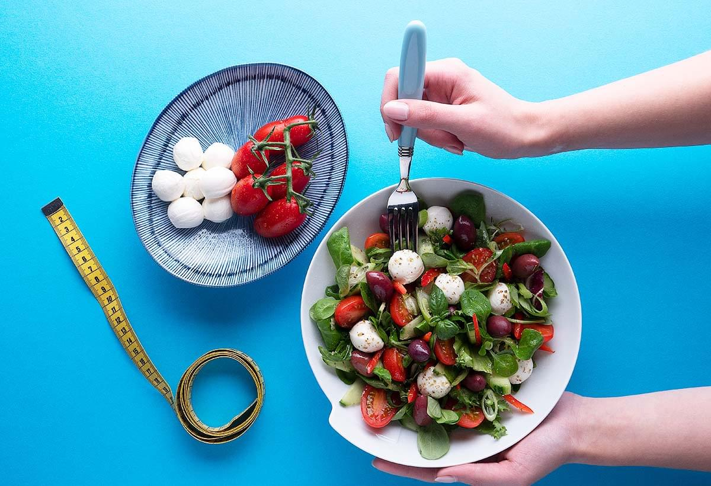
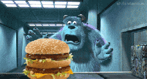

Дієта на 10 днів для позбавлення від зайвої ваги
Схуднути за 10 днів неможливо? Спробуй, це зовсім просто і безболісно. Десятиденна дієта спланована так, що ти не відчуватимеш голоду, хоча і їстимеш менше.
В день випивайте 1,5 літра води
Завжди майте при собі пляшку негазованої мінеральної води . Пийте воду часто між прийомами їжі (навіть якщо ви не відчуваєте спраги. Якщо вам смак звичайної води не до вподоби, додайте трохи меду або лимонного соку). Замість води можна пити несолодкий фруктовий чай.
Їжте фрукти у першій половині дня
У першій половині дня, коли ви найбільш активні, дотримуйтесь дієти з фруктами, обирайте плоди середнього розміру. Хоча у фруктах більше цукру, ніж в овочах, зайві калорії ви спалите легко. Вибирайте яблука, цитрусові, полуницю, але уникайте бананів і винограду.
Приділяйте більше уваги овочевим супам
Почніть свій обід з тарілки супу. Приготуйте суп з овочевого бульйону, додайте зелень (петрушку або кріп). Не використовуйте сіль або приправи на зразок "vegeta". у них міститься велика кількість натрію, який затримує воду в організмі та ускладнює процес втрати ваги. В дієті з овочевими супами можна використовувати макарони з житнього борошна або картоплю.
Переваги
Ви втрачаєте вагу без ефекту «йо-йо».
Під час першого дня своєї дієти для схуднення ви дізнаєтеся, як готувати дієтичні корисні страви. По закінченню дієти, ви будете знати, що треба вживати в їжу для боротьби з зайвою вагою.
Ви зміцните свій організм.
pСтрави, що ви споживаєте, забезпечать ваш організм всіма необхідними поживними речовинами, в тому числі клітковиною та антиоксидантами. Завдяки цим речовинам дієта стає ще більш корисною для вашого здоров’я.Правила дієти
- Краще всього подавати сніданок, обід та вечерю на невеликих тарілках, 17-18 сантиметрів у діаметрі. Це простіше, ніж підраховувати калорії. Увага! Той факт, що тепер ваша тарілка стала меншою, не означає, що їжу можна складувати догори.
- Їжте регулярно п'ять разів на день (навіть якщо ви не відчуваєте себе голодним). Така система дозволить вам підтримувати ваш нормальний рівень глюкози в крові та допоможе уникнути атак голоду.
- Організуйте харчування таким чином, щоб половину тарілки складала овочі: салати, помідори, огірки, редиска, перець, цикорій, броколі та цвітна капуста (сирі або приготовані на парі). 30% від обсягу вашої тарілки повинні бути призначені для продуктів, багатих вуглеводами: хліб із цільного зерна або житній хліб, коричневий рис, макарони з житнього борошна, картопля та ячмінь. Ще 20% потрібно виділити для білків: нежирні молочні продукти, м'ясо, нежирна ковбаса, яйця або морська риба.
- Дозволяється перекусити два рази на день: об 11-ій годині та після обіду.